This is the second lecture of my Systems Engineering course. This information is coming from the third chapter of the ASE book.
I already talked about Conceptual Design in Acquisition Phase in Systems Engineering.
Conceptual Design — what it is & what it produces
Conceptual Design
Conceptual Design is the first Acquisition-phase activity. It expands brief business needs into a system-level logical design and produces the initial Functional Baseline (FBL)—the anchor for all downstream design. Errors here propagate and get costlier later.
In other words: producing a set of clearly defined requirements at the system level, and in logical terms
Activities
- Discover stakeholder needs
- Scope the system
- Describe system operation
- Specify system functions
- Capture functionality in requirements
- …
- Fully defined system
It sits in the problem domain and is primarily the customer’s job (heavily involving the business side). It is imperative that it adequately represents the business and stakeholder needs and requirements.
We have 5 iterative processes:
- Define Business Needs & Requirements (BNR) → PLCD + BRS
- Define Stakeholder Needs & Requirements (SNR) → LCD + StRS
- Define System Requirements → draft SyRS
- System-level synthesis → final SyRS (preferred solution)
- System Design Review (SDR) → approved initial FBL.
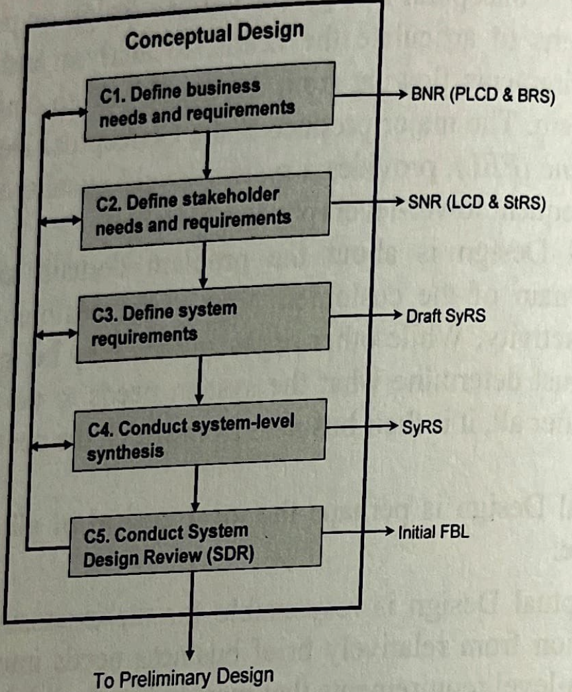
Business Needs and Requirements (BNR)
Before any work can commence on developing the system, the basic BNR must be articulated clearly and completely by business management… Figure 3-2 summarizes the activities and steps involved with definition of BNR resulting in the development of the PLCD and the BRS.
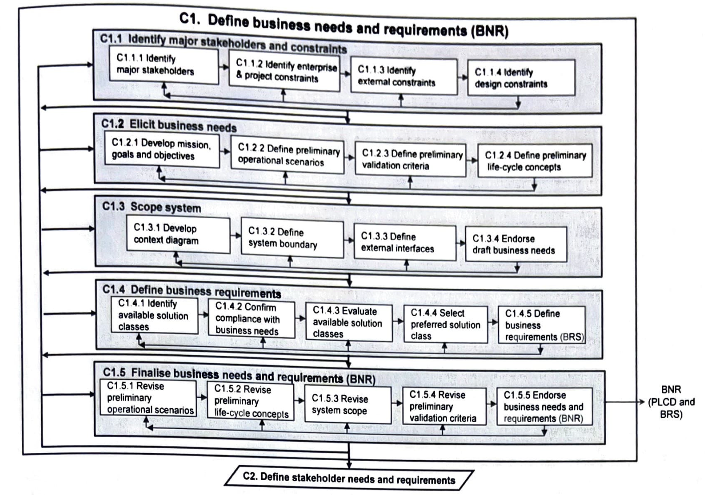
At the strategic level of the organization, business management begin the definition of BNR with the identification of the major stakeholders. They also must identify the business, project, external, and design constraints that provide important context
Stakeholders
Stakeholders
The first step in developing the BNR… requires the identification of the major stakeholders for all aspects of the new system. These stakeholders are the individuals and groups from the organisation’s operational level that business management identifies as those who will be responsible for writing and agreeing to the BNR.
A stakeholder could be defined as some individual (or some group or organisation) who has a right to influence the outcome of the system, rather than someone who is simply affected by the system.
The major stakeholder’s needs are to be the Key Drivers of the system.
This first act of stakeholder identification is therefore crucial—business management must decide which of the potentially very large number of actors… are to be considered as stakeholders (those that are to have the right to define the system) for the system of interest.
Example: Aircraft
- Users, including air crew and ground crew — Marketing people
- Maintainers influence the design
- Logistics and supportability issues — likely to influence the design decisions
Constraints (focus on life-cycle)
Constraints are requirements that are imposed on the system by circumstance, force, or compulsion — they therefore limit absolutely the options open to a designer by imposing immovable boundaries and limits.
- Business constraints include management guidance, organisational policies, procedures, standards or guidelines… partnering relationships… life-cycle processes, contracting policies, human resource limitations, budget restrictions…
- Project constraints include budget and schedule constraints. They also impose budget allocations, externally imposed deliverables and acquisition timeframes… conform to particular engineering and technical standards; mandated toolsets, documentation sets and plan templates; technology use; and control and reporting mechanisms.
- External constraints are conformance to national and international laws and regulations, compliance with industry-wide standards, as well as ethical and legal considerations and interfacing with other systems… competitors… availability of human resources, specific skill sets, technologies and tools.
- Design constraints include those factors that directly affect how the system is designed… state-of-the-art of relevant technologies as well as extant methodologies and tools… risks associated with embracing new technologies… workforce re-skilling issues
Elicit Business Needs (mission, scenarios, validation, life-cycle)
-
Every project should begin with a concise statement of the mission elaborated by statements of the upper-level goals and objectives. The mission statement should be quite short (stated in a single sentence). Avoid using conjunctions (except, of course), physical terms(must not imply any particular physical solution e.g. ‘mechanical’ rather than ‘robotic arms’). It should include an ‘in order to clause: it ties the system mission statement and also rely on iteration.
-
The mission is then expanded into goals and objectives. Mission→goals(7-ish) →objectives (top-down)
-
It is not possible to develop all possible scenarios from all possible perspectives for all possible stakeholders… consideration must be given to the manner in which a suitable (minimal) set of scenarios is to be developed and all of the system requirements must be covered and all relevant actors must be described.
-
A possible way to define, or at least support, operational scenarios is via functional flow block diagrams (FFBD) — structuring the scenarios into a series of logical flows and serve both as descriptions of system use as well as provide excellent communications tools.
-
Specific operational scenarios are then described to depict the full range of circumstances under which the system is required to operate… There must be at least one scenario that represents the perspective of each major stakeholder. The development of operational scenarios is assisted by the presence of standard operating procedures (SOP) which describe the organization’s operational procedures and processes.
Measures & validation criteria (hierarchy)
- Critical issue (CI) that relate to the measurement of system goals. A CI is a measure of an aspect of the system that is of primary importance to business management and must be met before the system is allowed to proceed… commonly phrased as questions that must be answered in the affirmative.
- Critical operational issue (COI) that relate to the measurement of objectives. A COI is a measure of an issue that must be examined to determine whether a system meets its mission… selected subsets of CIs… commonly phrased as questions that must be answered in the affirmative.
- Measure of effectiveness (MOE) that relate to the next level of objectives — the degree to which an operational objective is met under specified conditions… address effectiveness… and how well it integrates into the organization and operational environment.
- Measure of performance (MOP) — one of a subset of measures that combine to form an MOE.
- Verification statement — It is good practice to ensure that, every time a requirement is articulated, a corresponding verification statement is made.
- Technical performance measure (TPM) …selected MOPs and verification statements… used to assess conformance throughout the development process.
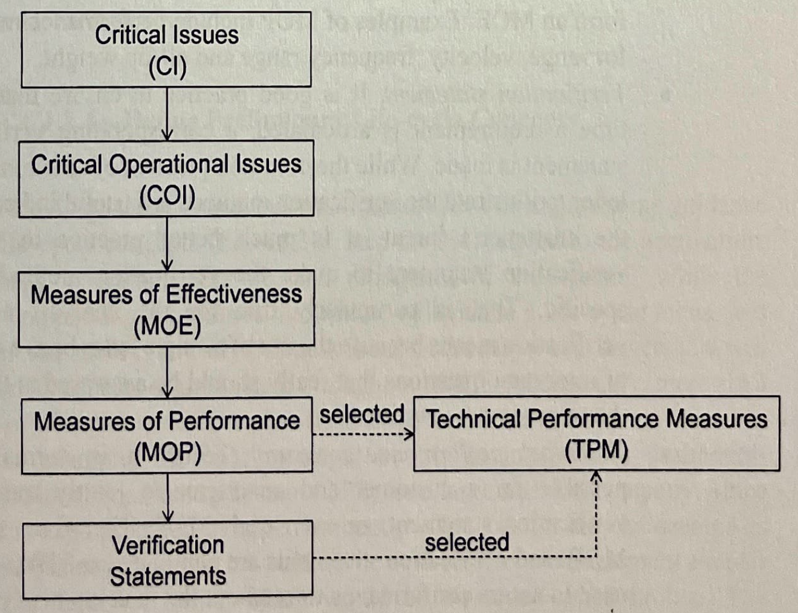
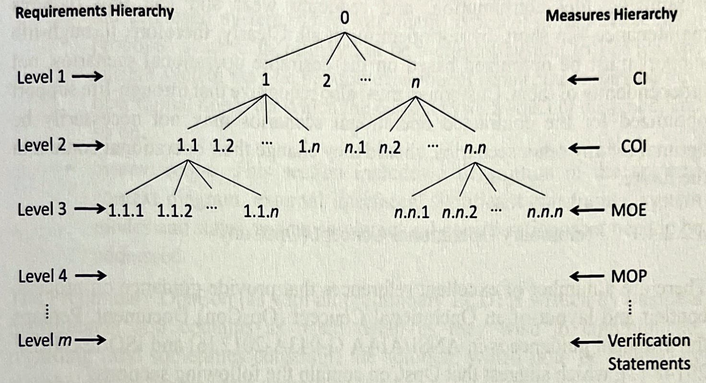
Scope the system (context, boundary, external interfaces)
- A boundary is the division between the system of interest and the rest of the world and identifying the boundary assists in understanding what is included in the system and what is left outside.
- The overlap of the two entities (in a context diagram) indicates the presence of an interface
- If the context diagram becomes complicated, it may be useful to separate the components: Operational view, Acquisition view, Support/sustainment view
Example of a context diagram for the operational view of a domestic security alarm
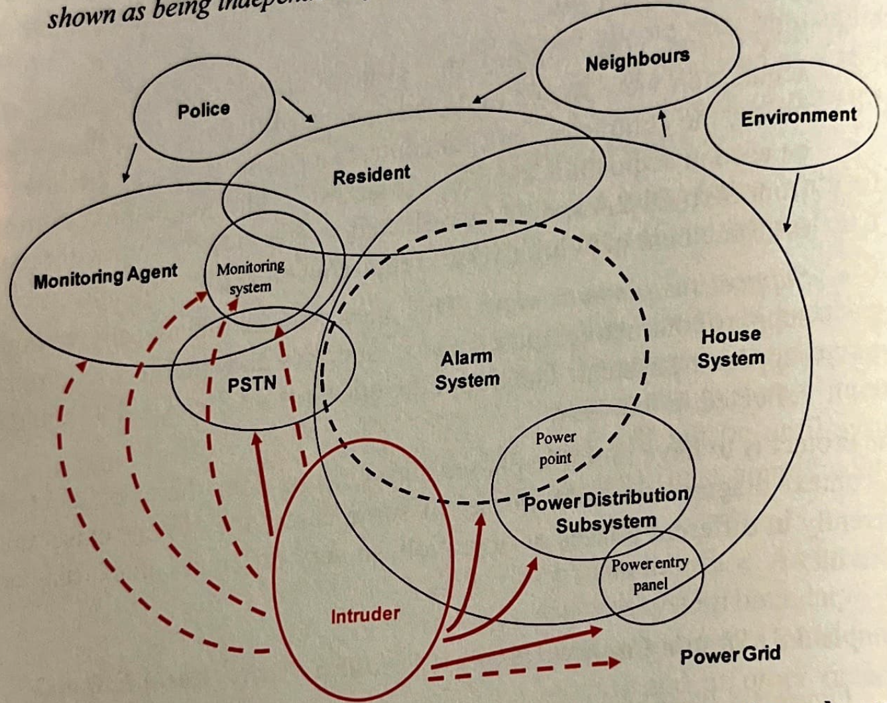
- Use cases are descriptions in a narrative and often visual style to illustrate how the system will operate and how users will interact with it.
- System context diagram: scoping, interfaces, constraints
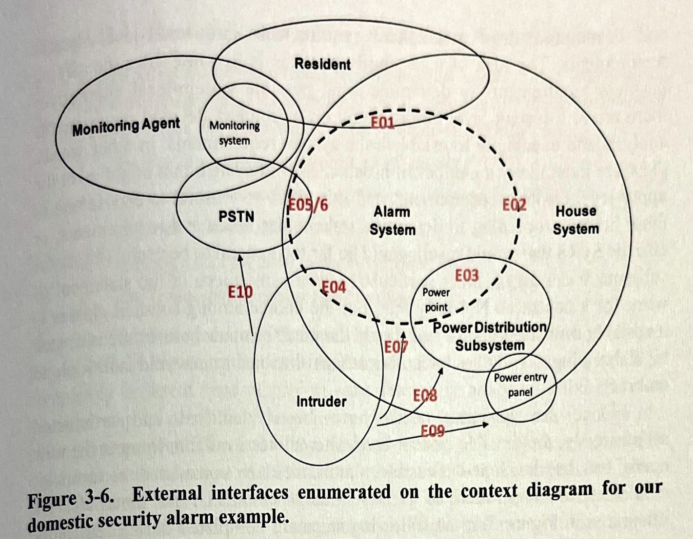
Other types of diagrams that help in identifying operational functions
- FFBD
- Black-Box Diagram (a functional and abstract view)
Definition of the system boundary (Figure 3.2) is essential early in the Acquisition Phase so that it is clear which elements are included in the system and which are outside. The boundary of a system is normally straightforward to describe in physical terms (such as a fence line, or external building walls), but it is often necessary to describe the boundary in conceptual or logical terms as well.
Each of these interfaces becomes the source of external interface requirements for the system.
External interfaces are between the system of interest and each of the other existing or future external systems to which it is interconnected. The interfaces describe the inputs and the outputs of the system—the interfaces to its external environment. The specification, development, test, and management of these external interfaces will place considerable requirements on the system. While the external systems are not directly related to the project, the success of the fielded system is often dictated by its ability to interface to those systems in its external environment.
What is the use of specifying interfaces?
- what
- how
- when
- which specific interfaces put constraints on the S.U.D. or on the environment.
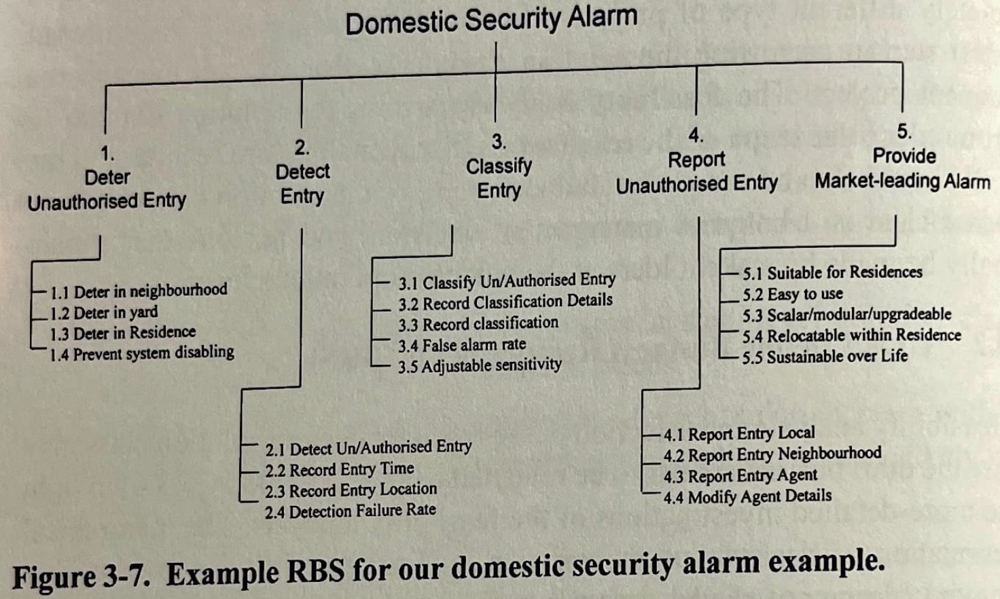
Define Stakeholder needs and Requirements (SNR)
The endorsement of the BR signifies that business management are confident that they have defined the problem domain in sufficient detail to communicate their needs and requirements to the stakeholders at the business operations level. These stakeholders then go on to develop their needs and requirements (the SNR) within the context of the BNR.
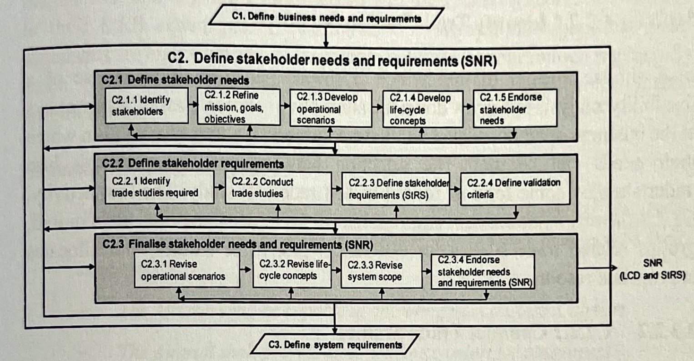
Define Stakeholder Needs
Once the BNR have been confirmed within the preferred solution class, the nominated stakeholders at the business operations level can begin to articulate their needs and requirements.
Within the context set by the BNR, stakeholders at the business operations level articulate their needs through the refinement of the mission, goals and objectives.
Define Stakeholder Requirements (StRS)
A reader of the StRS should be able to understand completely the likely applications or missions for which the system is intended; the major operational characteristics to be exhibited by the system; the operational constraints that limit the design and development of the system; the external systems and interfaces with which the system under development must operate; the operational and support environment within which the system must exist; and the support concept to be employed to support the system and enable it to continue performing in accordance with customer expectations.
Although the StRS is a formal requirements document, it must be written in the language of the stakeholders, it is not intended to be the FBL of the system and language must still be formal.
Example of StRS language
- The Aircraft shall be capable of operating from a Class X airport.
- The Aircraft shall provide class-leading comfort for passengers.
- The Aircraft shall be turned around to its next flight within 30 minutes.
Each requirement in the StRS must be accompanied by a validation statement — that is, the stakeholders must not only say what it is that they require, but also how it is they will know that the systems has met that requirement.
Finally, the SNR are endorsed. Endorsement of the StRS is not to be taken lightly. the StRS is the basis of further development of the requirements and it forms the centrepiece of the FBL of the system and assists in bounding the scope of the project from which cost and schedule estimates can be developed.
Define System Requirements (Steps of the SyRS)
- It starts with the endorsed SNR and then derives them into system requirements.
- It is important to concentrate on what is required rather than how to do it.
- I covered more on Requirements Engineering Framework
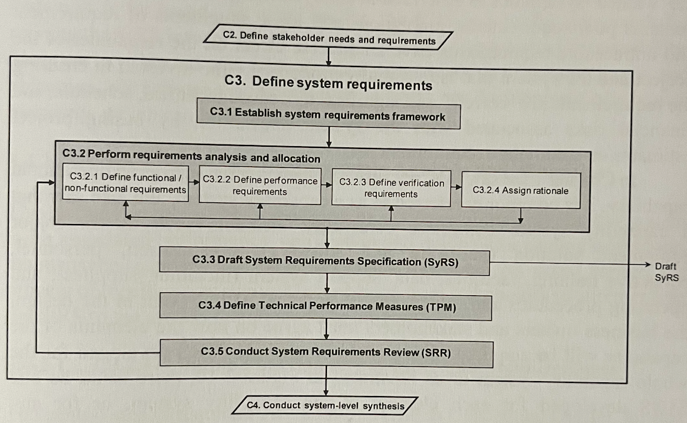
- Here it’s more of “what the plane’s cruise speed should be”, rather than going into details about the engine, airframes, flight controls, etc. The contractor will worry about how.
- They must take into account all the major stakeholder’s needs.
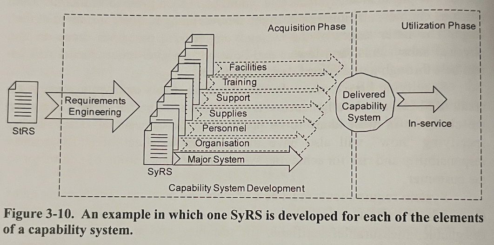
The next steps include
- Establish Requirements Framework (RBS captures mostly everything). RBS forms the structure of the SyRS.
- Perform Requirements Analysis and Allocation — the bridge from stakeholder requirements in the StRS to the system requirements in the SyRS.
- Define Functional/Non-functional Requirements. (Non-functional requirements are always constraints. A special type of constraint is an interface requirement.)
- Define Verification Requirements — every time a requirement is articulated, a corresponding verification statement is made.
- Assign Rationale — why each requirement is necessary + logic behind performance levels assigned to the requirement.
Draft System Requirements Specification (SyRS)
- When approved, it becomes the centerpiece of the FBL.
Define Technical Performance Measures (TPM)
- Key indicators of system performance — a sort of “health check”.
- They are also the passing criteria of the CDR (Critical Design Review) in the Detailed Design Phase.
- Example:
- All-up weight may be considered a TPM since it is a key indicator of likely performance (Aircraft System)
Conduct System Requirements Review
- End-of-phase review confirming the system-level solution, approving V&V plans and SEMP, and baselining the initial FBL
- The aim is to monitor and approve progressively the system-level requirements that are developed on the way to the initial FBL.
- May also review other info such as manufacturing plans, design schedules, personnel requirements plans.
- Complex projects may require multiple SRRs in the Conceptual Design.
- Will review the margins and category (priority) of each requirement to ensure that each is being afforded appropriate weighting
- Once designers are satisfied that the set of requirements is sufficiently complete at the system level, the last review is the System Design Review (SDR)
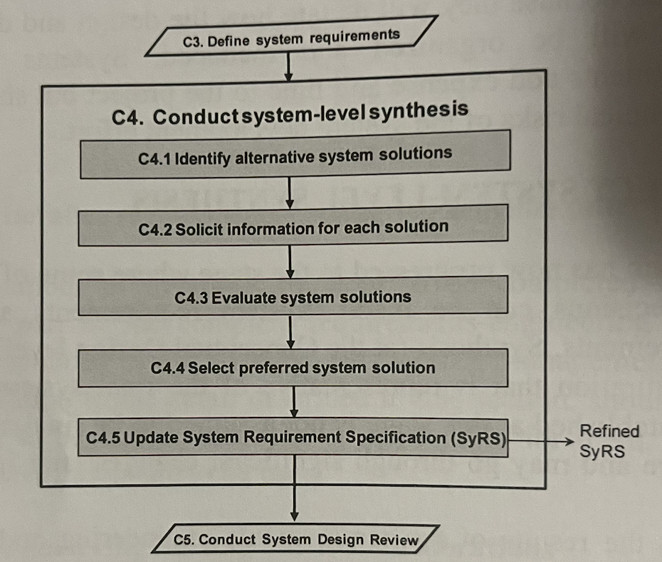
Conduct System Design Review
-
Goal: Agreement on system functionality (FBL) and product development.
- Convinced that stakeholder needs (BNR, SNR) will be met,
- SRR
- System concepts
- V&V plans
- SEMP and PMP
- Cost estimates
- Risk
-
The SyRS is finalized after SDR.
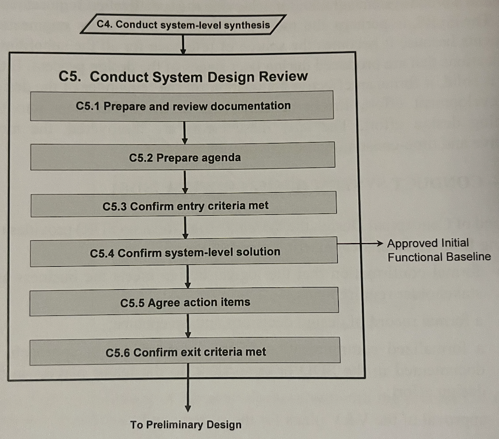